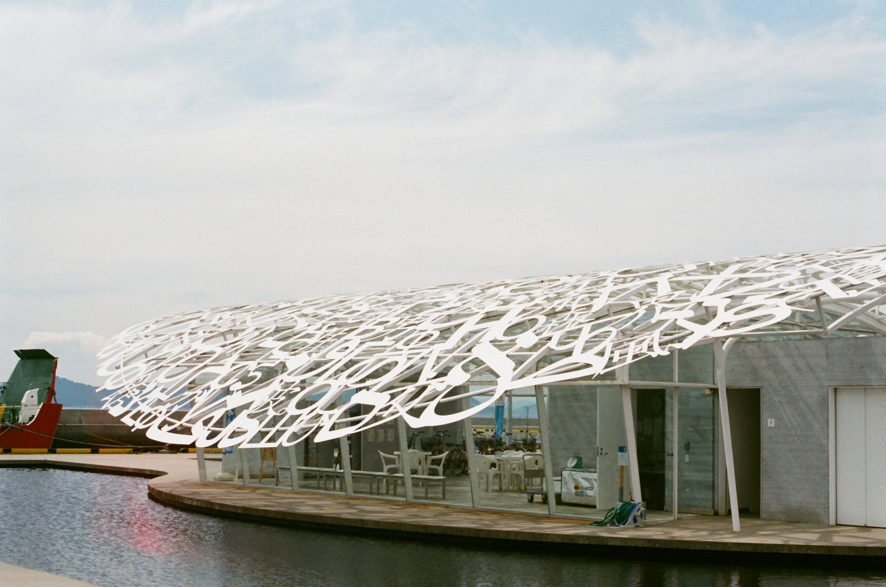
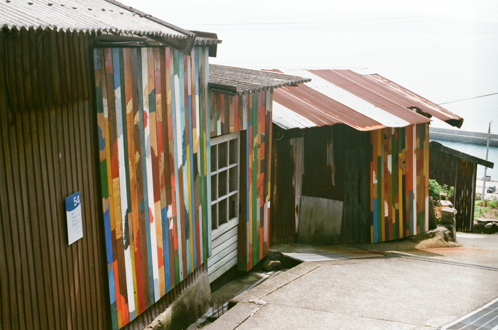
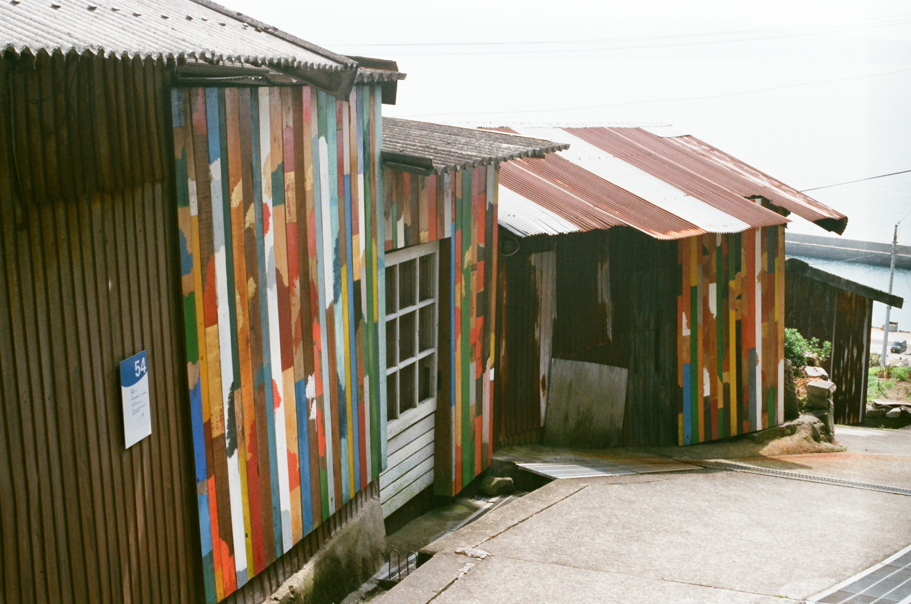

アートに猫、絶景に癒される ― 男木島
8/26 2022
カテゴリー：香川
目次
女木島の北約1kmに浮かぶ男木島へのアクセスは、高松港から女木島経由で約40分。平地が少ないこの島には、南西部の斜面に階段状に集落がつくられ、港から民家が鱗のように重なり合う独特の景色を見ることができます。島内は徒歩で移動しましょう。
またビュースポットも多く、島内のどこからでも瀬戸内海の美しい景色を望めます。それから3年に一度開催される「瀬戸内国際芸術祭」の会場のひとつでもあるから、アートな雰囲気も楽しめます。島の斜面に民家が立ち並び、鱗のように連なる様子は男木島ならではの光景です。
＜男木島中心部＞
1. 島のシンボル「男木交流館」
「男木島の魂」― ジャウメ・プレンサ
港に到着後まず目に入るのは、以後何年にもわたって続く芸術祭の記念すべき第1回「瀬戸内国際芸術祭2010」のときに建てられた、芸術的な白い立体物。スペインの現代芸術家、ジャウメ・プレンサさんの「男木島の魂」という作品です。
建物の中には、無料で配布されたパンフレットラック等も。ここで情報取集して、目的地や距離を確認することがオススメです。
2. 男木島 路地壁画プロジェクト wallalley
 

「男木島 路地壁画プロジェクト wallalley」― 眞壁陸二
坂道の石段や石畳が美しい男木島の路地を歩くと、カラフルなペインティングが施された壁画と出会うことができます。
眞壁陸二さんの「男木島 路地壁画プロジェクト wallalley」は、島で集めた廃材などに風景のシルエットを描き､民家の外壁に設置した作品で、島の景観の一部として溶け込んでいます。
3. 豊玉姫神社
島に残る豊玉姫伝説ゆかりの地として知られ、島の人からは「玉姫さん」と呼ばれ親しまれています。港の大鳥居から参道に通じています。
島一番のビュースポットとして知られ、参道に続く階段で振り返ると男木島ならではの美しい風景と出会うことができます。
＜男木漁港周辺＞
4. 歩く方舟
「歩く方舟」― 山口啓介
男木漁港に設置された山口啓介のアート作品。旧約聖書に出てくるノアの方舟にヒントを得た立体作品で、海や空に溶け込む白と青の模様をした方舟が､海を渡ろうと歩くさまを視覚化しています｡
＜男木島全体＞
5. 可愛い猫に癒される
男木島は、猫好きにもたまらない人気スポットです。
島のあちらこちらでのんびりしている猫たちに出会えますよ。潮風を浴びながら日向ぼっこしている姿は、とっても気持ちよさそう。見ているだけで、こちらまで幸せな気分になりますね。